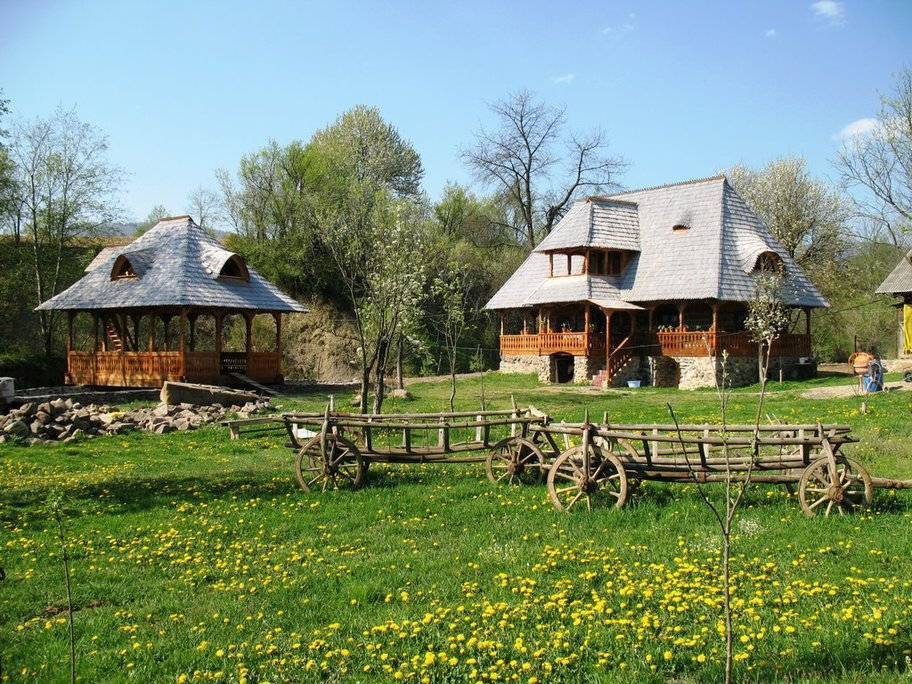
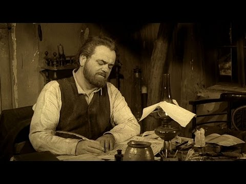
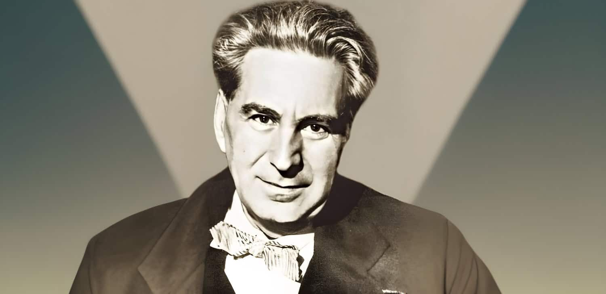

Bine ați venit!
Descoperiți latura populară și autentică a lui Ion Creangă, așa cum este prezentată în capitolul „Țărăniile lui Creangă” din lucrarea lui George Călinescu. Ion Creangă, scriitor de origine rurală, este cunoscut pentru stilul său inconfundabil, care îmbină umorul popular, simplitatea și autenticitatea. Călinescu îi descrie „țăranismul” ca fiind parte din personalitatea sa, un amestec unic de simplitate și înțelepciune rurală.
În această pagină, vom explora felul în care „țărăniile” lui Creangă influențează atât viața sa personală, cât și operele literare. Călinescu subliniază cum Creangă evită formalitățile, își păstrează naturalețea și se conectează prin scris cu valorile și tradițiile satului moldovenesc.
Caracteristicile lui Creangă
Personalitatea lui Ion Creangă este strâns legată de originile sale rurale. Călinescu evidențiază cum acesta adopta un stil de viață și un mod de exprimare specifice țăranului moldovean, fără să facă eforturi să pară altceva. Creangă este descris ca un om de o simplitate autentică, dar care ascunde o înțelepciune profundă, specifică oamenilor de la țară.
„Țarănia lui Creangă nu era doar o mască, ci o trăsătură naturală, crescută din viața rurală pe care a cunoscut-o.”
Un exemplu notabil al „țăraniei” sale este abordarea sa directă și fără compromisuri față de educație și religie, două aspecte esențiale în viața rurală de la acea vreme. Creangă combină umorul cu ironia pentru a expune adevărurile simple ale vieții și adesea folosește expresii populare care dau autenticitate scrierilor sale.
Creangă înfrunta cu seninătate și zâmbet pe buze dificultățile vieții, reflectând un temperament echilibrat și adaptabil. Prin aceasta, el devenea nu doar un cronicar al satului moldovenesc, dar și un exemplu de umanitate autentică, păstrând legătura cu spirituală cu pământul și obiceiurile locului.
Portretul lui George Călinescu
George Călinescu, critic literar și istoric literar, a fost cel care a analizat în profunzime „țărăniile” lui Ion Creangă. Iată un portret al acestui mare gânditor, care a adus o contribuție esențială în înțelegerea operei lui Creangă.
Concluzii
„Țărăniile” lui Creangă sunt fundamentul personalității și operei sale literare, aducând o notă de autenticitate rar întâlnită în literatura română a vremii. Călinescu explică modul în care această „țăranie” îl ajută pe Creangă să creeze opere realiste, vii, care transmit experiențele și trăirile omului simplu din satul moldovenesc.
Prin modul său natural de a fi, Creangă reușește să creeze o literatură accesibilă, în care orice cititor să se poată regăsi. Contribuția lui la literatura română constă în modul în care își valorifică rădăcinile rurale, reușind să ridice trăsăturile simple ale țăranului moldovean la nivel de artă literară.
Capitolul „Țărăniile lui Creangă” ne arată cum simplitatea și sinceritatea pot conferi o profunzime aparte unei opere literare și de ce Ion Creangă rămâne o figură emblematică în cultura românească.